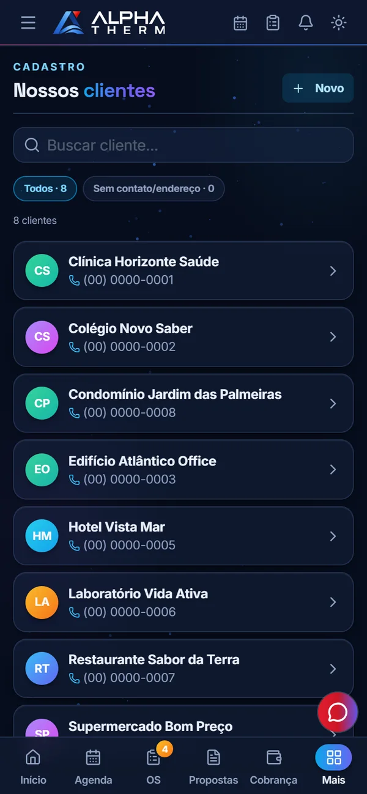
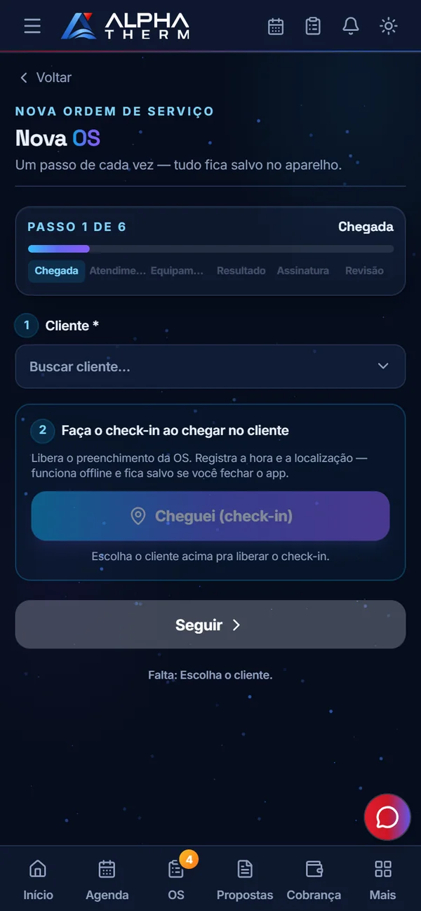

Alphatherm Atendimento
An offline-first PWA that took field technicians off paper forms, a 3,700-row spreadsheet and Word documents, and later became the ERP's field-service module.
Um PWA offline-first que tirou os técnicos de campo dos formulários, de uma planilha de 3.700 linhas e de documentos Word, e depois virou o módulo de campo do ERP.



All screenshots use fictitious sample data.
Todas as telas usam dados fictícios.
Service orders on paper, history in a spreadsheet.
Ordens de serviço no papel, histórico numa planilha.
Technicians filled an online form, the office copied it into a giant spreadsheet, and reports were assembled by hand in Word. Information got lost between steps, approvals happened on WhatsApp, and in basements and machine rooms there was often no signal at all.
Os técnicos preenchiam um formulário online, o escritório copiava para uma planilha gigante e os relatórios eram montados à mão no Word. Informação se perdia no caminho, aprovações aconteciam no WhatsApp, e em subsolos e casas de máquinas muitas vezes não havia sinal.
One app from the field to the client's inbox.
Um app do campo até o e-mail do cliente.
Works without signal
Funciona sem sinal
An outbox queue stores every change locally and syncs when the connection returns. Drafts survive app restarts and a cache warmer preloads what the technician needs for the day.
Uma fila de envio guarda cada alteração no aparelho e sincroniza quando a conexão volta. Rascunhos sobrevivem ao fechar o app, e um aquecedor de cache pré-carrega o que o técnico precisa no dia.
Service orders end-to-end
Ordem de serviço completa
Check-in with location, equipment, photos, client signature on screen and a PDF report generated on the device, then an approval flow for the office.
Check-in com localização, equipamentos, fotos, assinatura do cliente na tela e relatório em PDF gerado no aparelho, com fluxo de aprovação para o escritório.
Roles enforced in the DB
Perfis garantidos no banco
Technician, inspector, director and admin each see their own dashboard, and Row-Level Security makes sure the data follows the same rules.
Técnico, inspetor, diretor e admin veem cada um o seu painel, e o Row-Level Security garante que os dados sigam as mesmas regras.
Proposals & quotes
Propostas e orçamentos
Proposals with discounts and payment terms, sent by email as PDF, with amounts written out in words.
Propostas com desconto e condições de pagamento, enviadas por e-mail em PDF, com valores por extenso.
Push & agenda
Push e agenda
Push notifications for new orders and check-ins, plus an agenda with reminders.
Notificações push de novas ordens e check-ins, e uma agenda com lembretes.
Accounting sync
Sincronia contábil
Serverless functions sync receivables and products with the company's cloud accounting platform via OAuth, on a schedule.
Funções serverless sincronizam recebíveis e produtos com a plataforma contábil da empresa via OAuth, de forma agendada.
legacy records imported
registros antigos importados
SQL migrations with RLS
migrations SQL com RLS
serverless functions
funções serverless
commits before joining the ERP
commits antes de virar módulo do ERP
The source code belongs to the company and is private.
O código pertence à empresa e é privado.